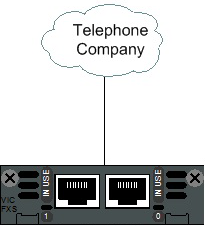

Gateway
Faça o meio de campo.
Gateway
Tradicionalmente, quando falamos em gateways no mundo das telecomunicações, estamos nos referindo a equipamentos intermediários, que fazem a interconexão de redes de computadores distintas além de fazer a tradução dos protocolos utilizados nessas redes. Mas como funciona um gateway neste mundo? para que serve? como são utilizados? Para o cenário de VoIP, os gateways estão mais ligados à tradução de protocolos e conversão de tecnologias, onde são utilizados, principalmente para conectar os velhos equipamentos analógicos ao mundo VoIP, ou ligar uma operadora à uma outra através de interconexões específicas. O gateway VoIP é utilizado para fazer a conversão de tecnologias. Existem diversos tipos diferentes de gateways.
FXS
Este é o tipo de gateway mais utilizado nos cenários onde se tem uma central telefonica voip, pois ele é o responsável por receber as chamadas da linha analógica e converte-las para um padrão conhecido em voip.

FXO
Este gateway é utilizado para fazer o processo inverso do gateway FXS,
convertendo as chamadas VOIP para o padrão das linhas analógicas,
permitindo realizar chamadas diretamente de uma central telefônica para a rede pública.
GSM
Neste gateway, é feita a ligação da rede VoIP à rede GSM das operadoras de telefonia móvel. Neste tipo de gateway, são conectados os SIM Cards (Chips) das operadoras diretamente nele.
E1
Já este tipo de gateway faz a interconexão da rede VoIP à operadora de telefonia pública através de links digitais, os chamados E1.
Projetos Relacionados